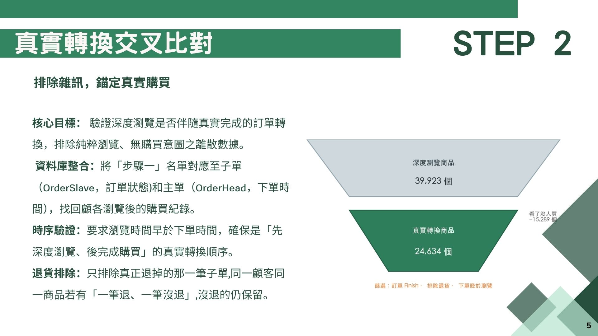
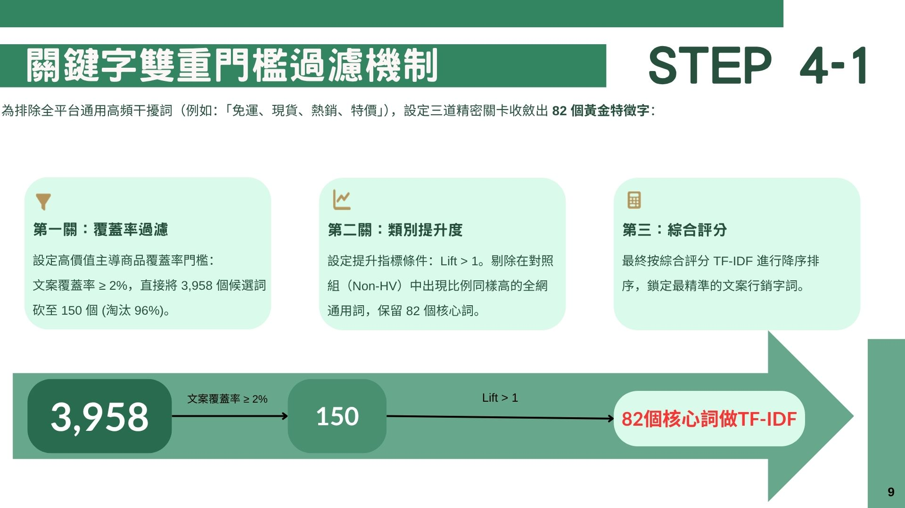
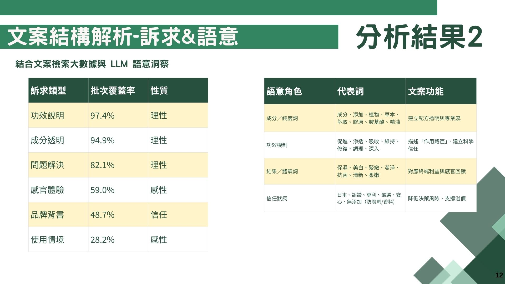

類別提升度
比較詞彙在高價值客群與非高價值客群主導商品中的出現比例；數值越高，代表該詞對高價值客群越具專屬性。
Lift = coverage_hv / coverage_non_hv商業資料分析 · 課堂團隊案例
CASE STUDY 01
以線上行為、訂單、RFM 分群與商品文案為線索，建立可解釋的分析流程，探索更貼近高價值客群的商品溝通方向。
本頁為課堂團隊案例的去識別化整理。原始資料與程式碼未公開；僅節錄未含組員身分與可識別資訊的簡報頁面。文中結論為分析洞察與後續驗證假設，並非已證實的商業成效。
商業問題
單一行銷話術難以回應不同客群，尤其難以有效溝通高價值會員。
分析目標
找出與高價值客群真實購買相關的商品與文案特徵。
資料範圍
訂單、會員、線上行為歷程、客群標籤與商品頁文本。
分析方法
從 viewproduct 行為出發，以同一訪客的下一筆事件時間估算停留秒數；將停留超過 30 秒的商品瀏覽，視為較具意圖的深度瀏覽。
將深度瀏覽與訂單串接，確認「先瀏覽、後下單」的時間順序，並限定完成且未退貨的交易，以降低純瀏覽與無效交易的干擾。
以近期購買（R）、購買頻率（F）與消費金額（M）描述會員價值，將會員區分為高價值、一般與低活躍／流失客群。
保留高價值客群購買占比較高的商品，再用覆蓋率、類別提升度（Lift）與 TF-IDF 綜合排序，排除「免運、現貨、特價」等平台通用詞。
以固定 JSON 欄位，分批擷取標題句型、訴求類型、關鍵字角色與文案規律；再以 Python 統計彙整，形成跨品類洞察。
指標設計
比較詞彙在高價值客群與非高價值客群主導商品中的出現比例；數值越高，代表該詞對高價值客群越具專屬性。
Lift = coverage_hv / coverage_non_hv將文字重要性與客群專屬性標準化後整合，作為關鍵字排序依據。
score = Z(TF-IDF) + Z(log Lift)重點數據呈現



分析發現
成分、配方、作用機制與具體數據，有助於讓商品價值更容易被理解。
認證、專利、產地與無添加等資訊，可降低決策風險並支撐產品信任。
將商品效益對應到具體痛點、受眾或使用情境，能讓溝通更加聚焦。
較具潛力的溝通結構：
理性資訊 + 安全感建立 + 明確效益與決策引導
後續應用與限制
這是一份課堂團隊案例的去識別化呈現。
回到精選作品 ←